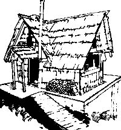
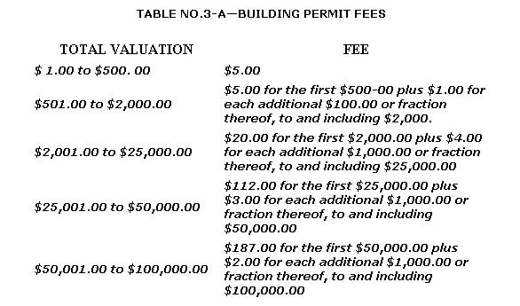

"Shucks. Puttin' up your own house ain't hard at all. What's hard is figuring out and conforming to all those @#$%0& * building codes and regulations.
Take heart, all you would-be and actual fabricators of do-it-yourself shelter. At last someone (good old MOTHER) has commissioned a series of articles designed to help you meet - and beat! - those most trouble some of all obstacles in the construction of your own home: THE BUILDING REGULATIONS.
The series of informative pieces (the first of which appeared in MOTHER NO. 40) was written by Ed Vitale, an attorney who specialized in real estate and building construction during most of his ten years of private practice. So read on as Ed [1] I investigates in detail the four major model building codes used in this country, especially as they apply to the activities of the owner-builder, [2] gives you concrete explanations and examples of "how to read the code", [3] reviews the statutory' and administrative framework of the construction and sanitary codes of four representative states, and [4] generally lays down criticism, comments and plain good help for anyone contemplating the construction of his or her own shelter.
Now that we have a few definitions under our belt, let's set the stage for an in-depth review of the building code (remember: it's the regulation that deals with the minimum requirements of how a building is to be constructed).
Let's assume that you - the owner-builder - have a piece of vacant property on which you want to build a house (or you've bought an old farmhouse you want to fix up) and that the municipality where that property is located has [1] a building code, which you must abide by, [2] a subdivision ordinance, which has not been violated since there was no division of the land you purchased, [3] a zoning ordinance, the provisions of which are satisfied because your property is in a single-family district and meets with all of the area requirements of the ordinance, and [4] a health or sanitary code that allows you to use an old-fashioned privy. (This last assumption is unlikely to be the fact ... but I make it so as not to unduly complicate the discussion at this point. I'll be dealing with the subject of health codes in a separate article in this series and will save my comments on the matter for that time.)
If you followed the advice I gave you in Part One of this series, you will have-before you bought your property-at least looked at, if not purchased, a copy of the building code in effect in your municipality. (If you don't have a copy of the code yet, get one from the municipal clerk's office.)
Read the handbook's table of contents ... or the division headings if there isn't such a table. Building code manuals are usually divided into chapters (or articles or parts) and you will quickly note that many of the chapters-such as those on Sprinklers and Standpipes, Steel Construction, Elevators and Dumbwaiters, Signs, etc.-just don't apply to your project (and, so, can be disregarded).
You should initially, however, review carefully the chapter on administration (generally the first one in the book). This is the part of the code which deals with the two immediate obstacles you will face: the building permit and the building inspector!
Before examining what's required to overcome those two obstacles, however, please let me qualify my remarks in two ways:
ONE. I don't know exactly how your building code is written-each code is organized differently-but all such regulations should be similar to one of the four model codes. Or at least similar enough so that a discussion of the Basic Building Code (BBC, also sometimes referred to as the BOCA code), the National Building Code (NBC), the Standard Building Code (SBC), or the Uniform Building Code (UBC)-plus the One and Two Family Dwelling Code (Dwelling Code)-will give you a pretty good idea of what to look for in your own area's construction regulations.
In other words, this discussion and review of the different code provisions important to the owner-builder is mainly valuable to you right now as a checklist against which you can compare your local ordinance. . . so that you will know what has been left out, revised, or added to the code which governs your situation.
TWO. I'll use the section numbers of the various code provisions as they appear in the drafts of the respective model codes. But remember that the numbering system contained in each of the four model building codes will probably be different from that used in your code ... even if your regulation is patterned after one of the models! This situation comes about because each municipality or county has its own numbering system for its ordinances.
All right. With those qualifications out of the way, we're ready to proceed.
A cursory examination of the chapter on administration in your code makes it apparent that you can hardly do any construction without governmental authorization (since that authorization, in all probability, is embodied right in the written building permit). Just reading the all--encompassing situations in which a building permit is required will give you an idea of the enormous reach of the building codes themselves:
"Permits Required. No person, firm, or corporationshall erect, construct, enlarge, alter, repair, move, improve, remove, convert, or demolish any building orstructure in the city, or cause the same to be done,without first obtaining a separate building permit foreach such building or structure from the BuildingOfficial." UBC § 301(a).
You can't even tear down a structure without a building permit ... as incongruous as that sounds! And all the other model codes have similar all-inclusive language (BBC § 113.1, NBC § 102.1, SBC § 105.1[a]).
Before showing you how to go about getting a building permit to construct a new home on a vacant lot, let's first determine if a building permit is required to make repairs on an existing dwelling under the different codes. This is instructive because [1] three of the codes happen to treat the problem differently, [2] it's a relatively simple and easy way to learn the code-reading technique that you should develop, and [3] you may want to use some of the theories (arguments) presented here to persuade your building inspector that you don't need a permit to fix up the old farmhouse you just bought or that you don't have to make the old, building conform to the requirements of the newer code.
REPAIRS. The BBC states in § 113.1 that you must get a building permit to construct or alter a building "except thatordinary repairs, as defined in Section 102.0, which do notinvolve any violation of this code shall be exempt from thisprovision " . When you turn to § 102.1, you find the follow ing. "Ordinary repairs to structures may be made without application or notice to the building official; but such repairsshall not include the cutting away of any wall, partition orportion thereof. . . " and continues on to state other defini tions of what these repairs are not! Though it's nice to know that you can make ordinary repairs without application or notice to the building inspector, you're still not sure-from the language of this section-just what ordinary repairs are.
CODE-READING TECHNIQUE: There is in most every code a chapter (or article or part) containing definitions. You must always refer to that chapter for every word that you find ambiguous . . . and whenever you try to make a noun or verb or adjective that you think you know fit a particular situation, you will find that the word's meaning becomes fuzzy. So look up that term you're Sure you can define anyway: you may not always find the word defined in your code, but frequently it will be (sometimes very differently from what you thought the meaning was), and how that word is defined can make all the difference in the world to your situation.
When you look in Article 2 of the BBC (entitled "Definitions and Classifications") you'll find that the "O's" don't include a definition of ordinary repairs (though tile meaning of "ordinary materials" is given). When you look under the "R's" in Article 2, you'll find "repairs" defined as: "The reconstruction or renewal of any part of an existing building for the purpose of its maintenance" There's no meaning Oven for "repairs, ordinary" so you still don't know if repairs and ordinary repairs are two slightly different concepts. But you are sure-if you're subject to a building code similar to the BBC-that you can reconstruct, renew, and repair (of course for the purpose of maintenance!) without first obtaining a building permit.
CODE-READING TECHNIQUE: As you can see, there may be two or three different places in a code to look up the meaning of a word and, as stated before, many words in all the codes are not defined at all. Some codes provide that undefined words "shall have their ordinary accepted meanings or such as the context may imply " (BBC § 201.3, NBC § 200.c)... but it's these undefined words and unclear provisions that allow you to argue knowledgeably with the building inspector that what you want to do is not really prohibited by the code.
(The NBC is similar to the BBC. Section 102.8 of the NBC states that "repairs may be made without filing an application or obtaining a permit". Repairs are defined in § 200 the same way as in the BBC . . . thus all the comments made in the discussion of the BBC are applicable to codes derived from the NBC.)
The SBC is a different story, however. It defines repairs in § 201.2 as does the BBC ... but that's the last of the similarities. Because § 105.1(c) of the SBC requires that "ordinary minor repairs may be made with the approval of the Building Official without a permit; provided that such repairs shall not violate any of the provisions of this code". (There are no definitions of "ordinary", "minor", or "ordinary minor" repairs in the SBC.) I don't know how it's possible to enforce the mandate of § 105. 1 (c) ... imagine summoning a do-it-yourselfer to court for failure to get approval of the building inspector to replace a window broken by a child's baseball!
The UBC is even worse. There seems to be absolutely no exceptions to the requirements of obtaining a building permit to make repairs. You simply must-pursuant to § 301 (a) quoted previously-get one! Whether or not you are cited and convicted of violating this building code when you patch a wall that needs repairs without first obtaining a building permit just depends on whether the building inspector wants to "go by the book".
I think you can now start to see that these codes sometimes reach the point of absurdity in their attempt to be allpervasive. This is a perfect example of how more and more laws create less and less respect for the law (you just can't legislate everything). And this regulation to the point of absurdity is also the key to understanding the concept-which will be developed later in this series of articles-that it's sometimes the building inspector, and not always the written words of the ordinance, that is the code.
Before I leave this discussion on repairs, there's one important problem that the owner-builder who is doing extensive renovations to an old house must be aware of ... and that's the problem of determining the point at which the building inspector will require that the entire structure be made to conform to code standards. (And you'll probably have to get a building permit to make the renovations, if they are required.)
I'm sure you'll not be surprised if I tell you that the situation is covered in these omnipotent codes (with the sole exception of the NBC which has no such provisions). If additions, alterations, or repairs (within a 12-month period) exceed 50% "of the value of an existing building", then the whole building has to conform to code standards. BBC § 106.2, SBC § 101.4(a), UBC § 104(b). If the alterations exceed 25% of value (but not more than 50% within the 12-month period), the BBC and the SBC-§ 106.4 and § 101.4(c) respectively-state that it's up to the building inspector to determine how much of the building shall be made to conform, while the UBC § 104(c) provides that only those parts of the building being repaired need be brought up to code standards. If the alterations are under 25% during a 12-month period, all three codes-BBC § 106.5, SBC § 101.4(f), and UBC § 104(e) for non-structural repairs-allow that the repairs can be made of the same materials as those in the original construction.
So your course of action-if you're in this kind of situation-is clear: Don't make repairs totaling more than 25% of building value during a single 12-month period.
CODE-READING TECHNIQUE: Watch for these time period stipulations in the codes and learn to use them to your advantage. For example, check your local code to see if it tells you when to start counting the 12-month repair cycle (the model codes don't). If your code is silent on this point, then it seems to me that, for repairs totaling 40% of value done over a span of two months, you might argue that one 12-month period ended after the first month in which you made repairs and a new 12-month cycle started at the beginning of the second month! ... it's at least worth a try.
THE APPLICATION. In order to obtain governmental authorization to build, reconstruct, and-sometimes-repair any dwelling, each model code requires you to make application for a building permit. The models don't, however, set forth the form itself (they leave that in most instances to the building inspector), but they do prescribe a list of minimum requirements that the application must include.
The UBC § 301(b) is typical of the information sought on an application:
(b) APPLICATION. In order to obtain a permit the applicantshall first file an application therefor in writing on aform furnished for that purpose. Every such application shall:
1. Identify and describe the work to be covered bythe permit for which application is made;
2. Describe the land on which the proposed work is to be done, by lot, block, tract, and house and street address, or similar description that will readily identify and definitely locate the proposed building or work;
3. Indicate the use or occupancy for which the proposed work is intended;
4. Be accompanied by plans and specifications asrequired in Subsection (c) of this Section;
5. State the valuation of the proposed work;
6. Be signed by the permittee, or his authorized agent, who may be required to submit evidence to indicate such authority;
7. Give such other information as reasonably may be required by the Building Official (See also BBC § 113, NBC § 102.3, SBC § 105.2.)
You should be prepared to provide similar information to your building inspector ... who probably will ask for this kind of documentation. Two of the more important requirements for the owner-builder in the above list are the valuation of the proposed work, and the plans and specifications that are sometimes required to accompany the application ... and both subjects will be discussed next.
THE FEE. When a building inspector tells you to state the valuation of the proposed work on an application, he's asking you to help him decide how much to charge you for a building permit fee. Under the UBC, these fees are charged on a sliding formula based on the valuation of the contemplated construction:
(I'm sure the owner-builder will have little need to know th fees for valuations over $ 100,000! The UBC also has a plan checking fee-§ 303 [b]-which is fixed at one-half of th building permit fee for the single-family dwelling. And, if you start construction without getting a permit, the UBC-in § 303[a] -requires double fees!)
It's the building inspector who has the power under the UBC to determine the value (defined in § 423 as "the esti mated cost to replace the building in kind, based on current replacement costs') of the proposed construction. So even though you consider your dwelling priceless (which it will b with all the hard work you put into it), try to make it appear worth less in the eyes of the building inspector.
The BBC-in § 118.3-requires that the building permit fee be based on "the volume of the structure, or as otherwise prescribed in the local ordinances. . . . " (How to compute volume is set forth in § 119.) This code also leaves it to the building inspector to establish a schedule of unit rates to be charged. (There is no plan-checking fee or doubling of fees if you start construction without a permit under this code.)
CODE-READING TECHNIQUE: Not all definitions of words or explanations of concepts are found in the chapter on definitions. Many times you'll find words or concepts explained in other sections of the code (as § 119 is used to clarify § 118.3 in the example above). Generally, if the explanatory material is not immediately preceding or following the section where the ambiguous phrase appears, that section itself should direct you to the explanatory provision.
The NBC doesn't even mention building permit fees in, the main part of its text, but has relegated that requirement to § 10 of the adopting ordinance it proposes in Appendix Q. The standard by which the building inspector is to set the fee under this code is based on "the estimated cost" (defined in § 10.g of Appendix Q as "the reasonable value of all services, labor, materials" excluding excavating, painting, decorating) of the structure. If you're going to use recycled materials you can validly argue that the "cost" of the dwelling is much less than its actual value ... and attempt to get your permit fee reduced. (There's no or doubling of fees for starting construction without a permit under this code.)
The SBC- in § 107.4-places the duty to set fees on the authority having jurisdiction - (presumably the governing body adopting the building code) and not oil the building inspector. The standard by which to collect fees is based oil the value (defined in § 201.2 as "the estimated cost to replace the building in kind ") of the construction. If you have underestimated the -value" of the structure oil the application, the building inspector (toes not set his own value (as is done in the other models ), but denies the permit. § 107.5. You then have to show detailed estimated costs to support your figures . . . or submit a new application showing new (higher) estimated costs.
Further, under the SBC, there's a plan-checking fee-for construction valued over $1,000-of one-half of the building permit fee, and that permit fee doubles if you commence construction without a permit. (The SBC does, in Appendix K, recommend a schedule of permit fees ... which are significantly lower than those charged under the UBC. For example, construction "valued" at $2,000 requires a fee of $20 under the UBC and only $10 under the SBC.)
PLANS AND SPECIFICATIONS. When you review the plans and specification provisions of your building code, you should look for two things: [1] whether plans and specs are required at all in order to obtain a building permit for a single-family dwelling, and [2] if required, whether or not the owner-builder can prepare the plans and specs himself.
The BBC-in §113.5-states that two copies of plans and specs must be filed with the building permit application. ("The building official ma y waive the requirement for filingplans when the work involved is of a minor nature " says this section, but I don't think you'll prevail in arguing that your small one-room cabin is "work of a minor nature". You (-an use this language however, to argue that the repairs, which might be extensive enough to warrant a building permit, are still of a minor nature so as not to require plans and specs.)
The plans that are mandated by the BBC shall be "drawn to scale, with sufficient clarity and detail dimensions to show the nature and character of the work to be performed ". If the building inspector demands engineering plans (it's optional with him), these must be signed by in architect or engineer § 113.7. So if you keep your construction simple and understandable to the building inspector, you can prepare your own plans and specs.
The NBC has seemingly uncomplicated directions in § 102.6:
Applications for permits shall be accompanied bydrawings of the proposed work, drawn to scale, showing when necessary, floor plans, sections, elevations,structural details, computations and stress diagrams asthe building off icial may require.
There is no option not to submit plans but there is also no requirrement that drawings be prepared by in engineer or architect. But that phrase "as the building official mayrequire" can be used to demand very precise drawings from you.
The SBC is the most liberal and most helpful to the owner-builder. Section 105.3(a) of this code gives the building inspector the discretion of whether to require plans at all. The plans-if demanded shall be "drawn to scale with sufficient clarity and detail to indicate the nature and character of the work but do not have to the signed by an engineer or architect. (§ 105.3 [c] does say that all structures more than three stories in height or with in area of more than 5,000 square feet have to the designed by an engineer or architect, but specifically exempts one- and two-family dwelling,", from this requirement.)
The UBC-as might be expected-is different. Two sets of plans and specs are required with every building permit application. § 301(c). That section goes on: "The building o ffi cial may require plans and specifications to be prepareddesigned by anengineer or architect licensed by the (state topractice as such. "There's no standard by which the building inspector is governed as to the circumstances that he can demand engineered plans ... He may as a matter of practice always ask for them and the owner-builder will be at his mercy and have to unnecessarily add to his expenses and pay all architect or engineer to prepare the plans.
But believe it or not, the UBC does have in exception to § 301(c) which can be used by the owner-builder. The exception states that plans and specs need not be submitted-"when authorized by the Building 0fficial" -for one-story conventional wood-stud construction not exceeding 600 square feet, or small and unimportant work. So if you re building small enough (or if you build each room of your dwelling separate from the others, with no single room over 600 square feet), you might try to take advantage of this provision.
The Dwelling Code-§ R-110 has followed the liberal language of the SBC and gives the building inspector discretion as to whether or not to require plans at all. (The Dwelling Code is not very detailed oil administration and that's why I have not quoted from its provisions up) to this point. For example, § R-109 just states that you must get a permit and pay a fee set by the building inspector ... there are no other regulations.)
If you have been reading carefully, you'll have noticed that the plans submitted under some of these codes "shall be of sufficient clarity" to indicate the nature of the work to be performed. Nowhere in any of these codes is "clarity" or " sufficient clarity" defined or is it stated to whom these plans shall be sufficiently clear. This language must mean I submit, that the plans have to be clear enough so that the building inspector call understand them ... and this leads me to the topic I'll cover in this series next installment.
Excerpts from and references to the following books are reprinted by permission of the publishers:
The BOCA Basic Building Code, 1975, copyright 1975 by Building Officials and Code Administrators International, Inc., 1313 East 60th Street, Chicago, Illinois 60637 (cost: $12.50).
Standard Building Code, copyright 1976 by Southern Building Code Congress International, Inc., 3617 Eighth Avenue South, Birmingham, Alabama 35222 (cost: $14.00).
Uniform Building Code, copyright 1973, together with 1975 Accumulative Supplement, copyright 1975, by International Conference of Building Officials, 5360 South Workman Mill Road, Whittier, California 90601 (cost: $14.00).
One and Two Family Dwelling Code, 1975 Edition, available from any of the four model code groups listed above (cost: $8.00).
Another useful source is: National Building Code, 1976, recommended by the American Insurance Association, Engineering and Safety Service, 85 John Street, New York, New York 10038 (cost: $6.00).
|
 |
 |
|